Initial Estimate
Turn everything captured on site into a priced, editable line-item scope — in the web portal, in seconds, with the evidence behind every line kept in view.
1. What Initial Estimate is
Draft copyInitial Estimate is the step where DocuSketch turns a documented property into a real scope: a list of line items with codes, quantities, units and prices, grouped by the room each one belongs to — ready to review, edit and export to your estimating software.
It runs in the web portal, on the project you already captured. You do not write the first draft: the estimate is generated from what is already in the project — the sketch, the rooms you marked as affected, the scope of work, the 360° tour, photos and documents. What you do is review it, correct what needs correcting, and send it on.
Why it is different from a spreadsheet
Every line item keeps a trail back to the thing that produced it. Open any line and you can see which room it belongs to, what evidence drove it — a photo, a room measurement, a note in the scope of work — and how the quantity was calculated. Nothing is a number you have to take on faith, which is what makes the estimate defensible when somebody on the other side of the claim asks why a line is there.
What you can do here
- Generate a first set of line items, and choose how broad that set should be.
- Review the scope room by room, with prices and totals updating as you work.
- Edit anything: codes, descriptions, quantities, the room a line belongs to.
- Inspect the evidence and the quantity calculation behind each line.
- Run the built-in checks that catch unassigned items, errors and gaps before you export.
- Export the result, or keep iterating in a new version.
Initial Estimate is the last stop of the documentation chain — capture, mark, scope, estimate — so how completely the project was documented decides how good the generated scope is.
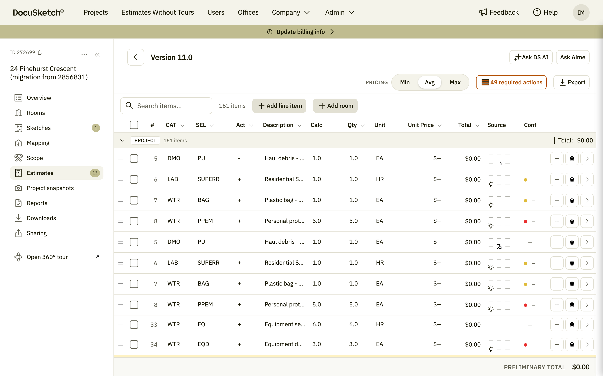
- File
- screenshots/01-editor-overview.png
- Where
- Project → Estimates → Initial → open a version
- Must show
- Version title, toolbar, the line-item table with a few rooms expanded and totals visible
2. Before you start
Draft copyAn Initial Estimate can only be as good as the project behind it, so the portal walks you through four steps. Only the first one is required — with a sketch in place you can generate immediately. The two in the middle are optional, and they are what sharpen the result.
- Get a sketch Capture the property with Instant Sketch in the DocuSketch mobile app, or order an Enhanced sketch. The result is a floor plan with measurements — the geometry every quantity is calculated from.
- Mark affected areas (optional, but it sharpens the scope) Mark every room the loss touched, directly on the sketch, and set the water category and class where they apply. The scope follows what you mark.
- Review your scope (optional) Confirm that rooms, materials and quantities look right before estimating. Corrections are much cheaper here than in the line-item table.
- Generate the initial estimate Takes a few seconds, and you can re-run it. What comes back is a Xactimate-ready scope, ready to review and export.
Opening it
Open the project and go to the Estimates tab. That tab tracks every estimate on the project — the ones you generate yourself and the ones ordered from the DocuSketch expert team. Use Create Instant Estimate to start a new one, or open an existing Initial estimate row to go back into the editor.
If the project is not ready yet, this is where the four steps above are shown, with a link straight to whichever one is still outstanding.
Initial Estimate depends on your company plan and on your user permissions. If you do not see the tab, or the generate action is unavailable, contact your DocuSketch account manager.
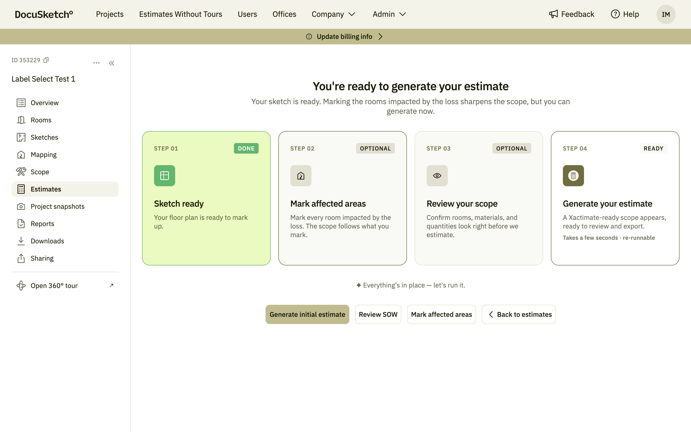
- File
- screenshots/02-onboarding-steps.png
- Where
- Project → Estimates → Initial, on a project with no estimate yet
- Must show
- All four steps with their state, and the Generate initial estimate button
3. How it works, end to end
Draft copyOnce the project is ready, working an Initial Estimate is a loop of five moves. You will rarely do them strictly in order — most people jump between reviewing and editing — but this is the shape of it.
| Step | What happens | Where it is covered |
|---|---|---|
| Generate | You choose how broad the generated scope should be, and DocuSketch builds the line items. | Section 4 |
| Review | You read the scope room by room, filter it, and check the lines you are unsure about. | Section 6, 7 |
| Edit | You correct codes and quantities, add what the capture missed, and remove what does not belong. | Section 8 |
| Validate | Built-in checks list what must be fixed before export — starting with items not assigned to a room. | Section 9 |
| Export | You take the estimate out — to your estimating software, as a report, or as a shared link. | Section 11 |
You never lose a previous state. Every generation creates a new version, and every saved round of edits a new revision inside it — so you can compare, and go back. See Versions and revisions.
4. Generating a version
Outline — to expandFuture Document360 article: Generating an Initial Estimate and choosing a scope strategy.
When you generate, you choose a scope strategy: how much DocuSketch should put in the first draft. The three strategies are nested — each one contains everything the previous one has, plus more — so the choice is really about where you want to start: with the minimum you can defend line by line, or with the widest set, which you then prune.
| Strategy | In one line | What it includes |
|---|---|---|
| Documented | Direct data only | Line items pulled strictly from provided data — scope of work, comments, 360°, documents and Instant Sketch. |
| Standard | Adds customer profile | Everything in Documented, plus items carried over from the customer profile — your office defaults and standards. |
| Expanded | Includes AI predictions | The largest output, including AI predictions and suggestions. Review and prune before committing. |
The picker does not make you guess. Each strategy shows how many line items it would produce, the selected one is broken down by confidence — how many high, medium and low — and a short Adds, e.g. list names example items it brings in over the narrower option. Nothing is committed until you press the Use button, and the editor reminds you that the items can be refined afterwards.
To expand here
- Where the office default strategy is set, and how to change it for one estimate only.
- What the generation banner shows while the estimate is being built, and why you can keep working.
- What committing a scope locks, and how to go back to the original generated set to pick differently.
- Re-generating: when it is the right move, and what happens to edits you already made.
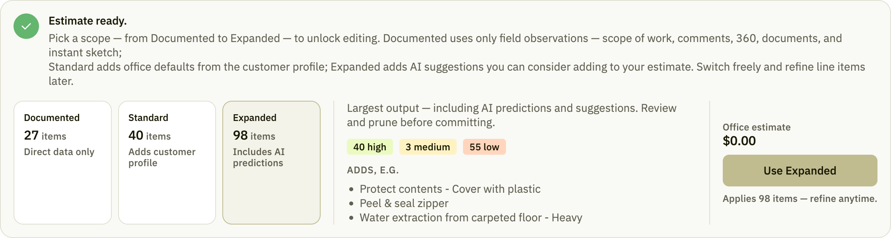
- File
- screenshots/03-scope-strategies.png
- Where
- Editor, on a version whose scope is not committed yet
- Must show
- All three strategies with item counts, the confidence breakdown and the Use button
5. Versions and revisions
Outline — to expandFuture Document360 article: Working with estimate versions.
Estimates are numbered Version N.R — the version number changes when a new estimate is
generated, the revision number when you save edits to it. The project's Estimates tab is where
they all live: every initial estimate on the project, with its status, how many line items it holds, its
amount, any notes, and when it was created and last updated. Each row opens the editor, and the history icon
beside it shows what happened to that estimate over time.
To expand here
- Reading the version list: states, totals, and which version is current.
- Version details and history.
- Comparing two revisions to see exactly what changed.
- When to generate a new version instead of editing the current one.
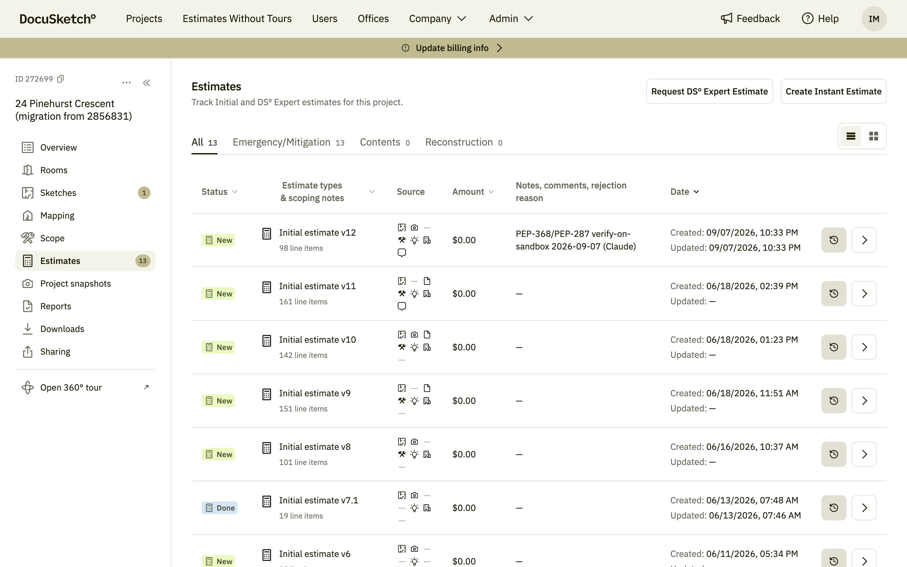
- File
- screenshots/04-version-list.png
- Where
- Project → Estimates, on a project with several versions
- Must show
- Several versions with different statuses, line-item counts and dates
6. Reading the line-item table
Outline — to expandFuture Document360 article: The line-item table.
The table is the estimate. Items are grouped, each group carries its own subtotal, and the footer carries the preliminary total for the version. Items not assigned to a room yet sit together in a single Project group — a standing signal that they still need a home.
Above the table sit the controls you will use most: a search box, Add line item and Add room — and, in the toolbar, the pricing tier (Min / Avg / Max), the count of required actions still open, and Export.
| Column | What it tells you |
|---|---|
| CAT / SEL / Act | The estimating code: category, selector and activity. |
| Description | The line item itself, in plain words. |
| Calc | The expression the quantity is derived from, where one applies. |
| Qty / Unit | How much, in which unit of measure. |
| Unit Price / Total | Pricing for the line, and the line total. |
| Source | Whether the line came from DocuSketch or was added by a person. |
| Conf | How confident DocuSketch is in the quantity on this line. |
| Row actions | Add, delete, and open the line item's own detail panel. |
To expand here
- Filtering by source — DS Engine versus User — and what each bucket means.
- Sorting, searching and jumping to a specific item.
- Collapsing rooms, and reading group subtotals against the version total.
- Switching the pricing tier and what that changes.
- Selecting several rows at once for bulk actions.
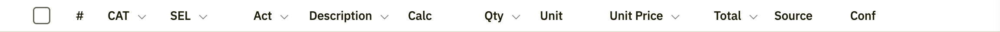
- File
- screenshots/05-table-columns.png
- Where
- Editor, table scrolled to a room group header
- Must show
- Header row, one room group with several items, the subtotal
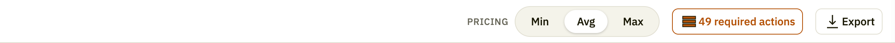
- File
- screenshots/06-editor-toolbar.png
- Where
- Editor, the strip above the table
- Must show
- Pricing Min / Avg / Max, the required-actions count, Export
7. Where a line item came from
Outline — to expandFuture Document360 article: Evidence and justification behind a line item. Likely the most-read article of the set.
Select any line item and the detail panel opens beside the table. Besides the editable fields, it answers two questions that matter when the estimate is challenged: what evidence put this line here, and how was this quantity arrived at.
| Block | What it answers |
|---|---|
| Sources | Which inputs produced the line — for example the sketch, the scope of work, or an office default. |
| AI Justification Summary | The evidence the line was driven by, listed one row per source. |
| Quantity Justification | How the quantity was determined, the confidence level, and the full calculation behind it. |
| Errors and warnings | Anything the validation rules flagged on this specific line. |
To expand here
- Reading a quantity calculation, with a worked example.
- Confidence levels, and what to do about a low-confidence quantity.
- Adding your own justification to a line.
- The evidence panel: provenance, linked project snapshots, and the assumptions that were made.
- The coverage audit: how much of the estimate is backed by snapshots, and where the gaps are.
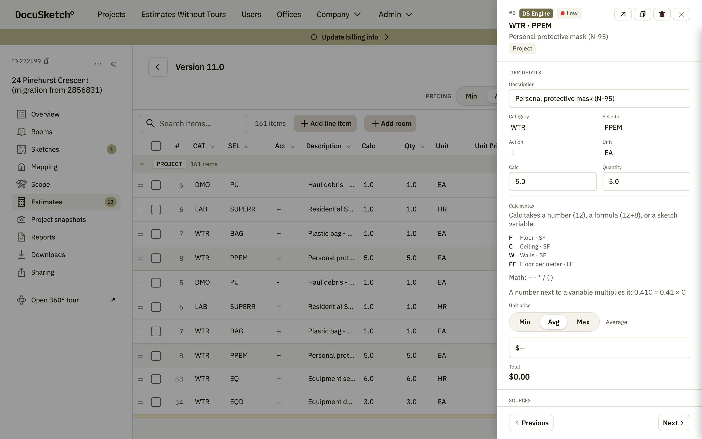
- File
- screenshots/07-line-item-panel.png
- Where
- Editor, a line item with justifications present
- Must show
- Item details, Sources, AI Justification Summary, Quantity Justification with a real calculation
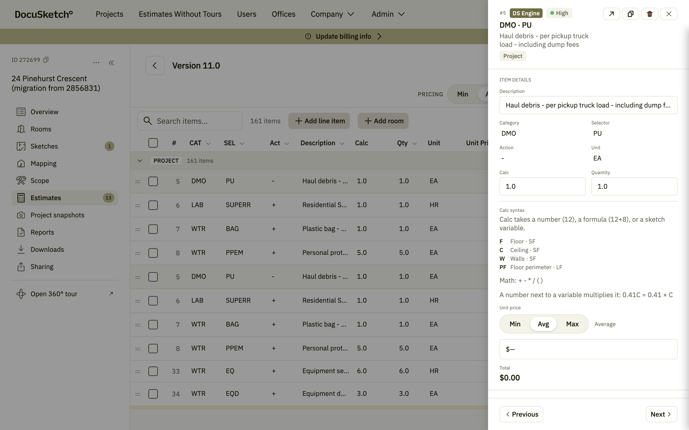
- File
- screenshots/08-evidence-panel.png
- Where
- Evidence view of a line item with linked snapshots
- Must show
- Provenance, snapshot links, assumptions
8. Editing line items
Outline — to expandFuture Document360 article: Editing the scope.
Everything in the table is yours to change. Edits are held until you save them, so you can work through a whole room and commit it in one go — or discard the round if it went wrong.
To expand here
- Editing in place: codes, description, quantity, unit price.
- The Calc field: it takes a plain number (
12), a formula (12+8), or a sketch variable —Ffloor,Cceiling,Wwalls,PFfloor perimeter — with+ - * / ( )and implicit multiplication, so0.41Cmeans 0.41 × ceiling area. The editor keeps this cheat-sheet next to the field. - Adding a line item from the price catalog.
- Duplicating, moving between rooms, and deleting items.
- Assigning an item that has no room.
- Bypassing a flagged item, and why the reason you type matters later.
- Excluded items: what ends up there and how to bring something back.
- Unsaved changes, saving, and discarding.
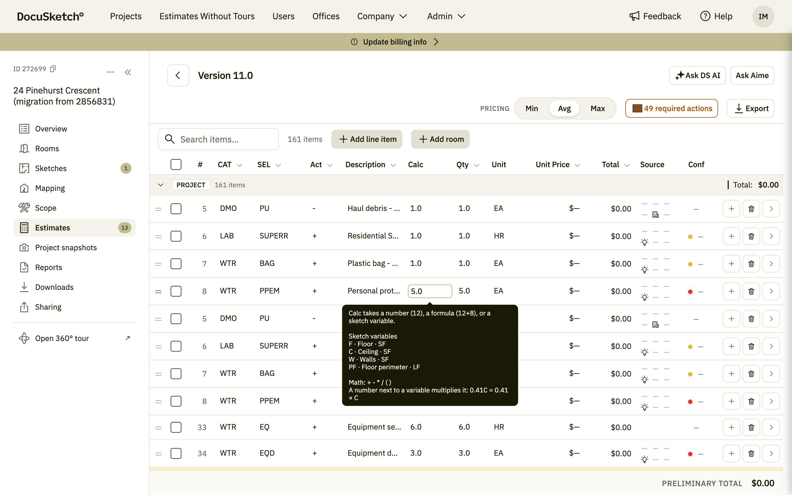
- File
- screenshots/09-inline-edit.png
- Where
- Editor, a cell in edit mode
- Must show
- The active cell and the unsaved-changes state in the toolbar
9. Checking quality before you export
Outline — to expandFuture Document360 article: Validation and coverage checks.
Before an estimate leaves the portal, the built-in checks tell you what still needs a decision. The toolbar keeps the count in view — 49 required actions in the screenshot above — and opens the full report when you click it. When nothing is left, the report says so plainly: no required actions — this estimate is ready to export.
To expand here
- The issues report: unassigned items first, then errors, then suggestions.
- Fixing versus bypassing — and when bypassing in bulk is reasonable.
- Accepting a suggested item.
- The coverage audit and gap analysis.
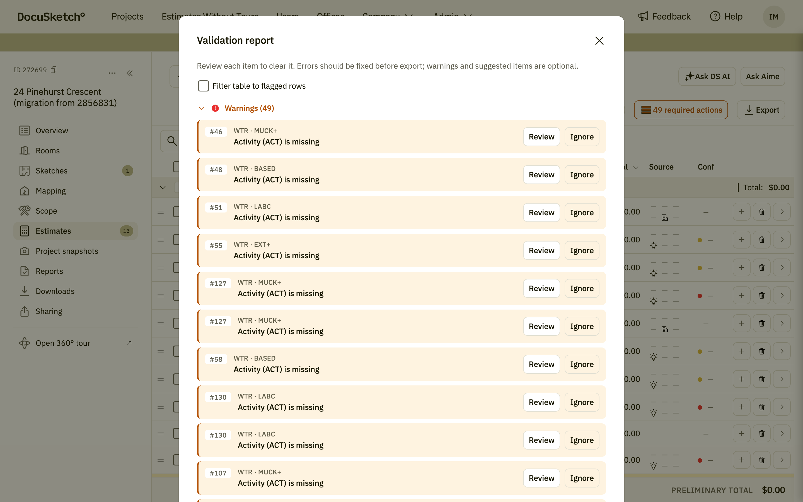
- File
- screenshots/10-validation-report.png
- Where
- Editor toolbar, the required-actions button
- Must show
- Unassigned items, errors and suggested items sections with counts
10. AI assistance
Outline — to expandFuture Document360 article: AI assistance in the estimate editor. Availability varies by account — confirm before publishing.
Beyond generating the scope, the editor can answer questions about the estimate and act on instructions in plain language. Both assistants sit in the top-right corner of the editor: Ask DS AI and Ask Aime.
To expand here
- Asking a question about the estimate, and what the answer is based on.
- Describing a change in words and reviewing what it proposes before applying it.
- What these assistants can and cannot see.
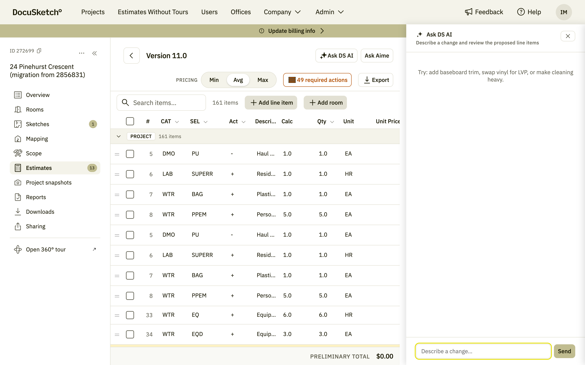
- File
- screenshots/11-ai-assistant.png
- Where
- Editor header, Ask DS AI / Ask Aime — account must have them enabled
- Must show
- The panel open with one question and its answer
11. Exporting and sharing
Outline — to expandFuture Document360 article: Exporting an Initial Estimate.
When the estimate is ready, the export panel puts the output formats and what goes into them in one place — the line items themselves, the floor plan with measurements, and the supporting documentation.
If anything still needs a decision, the panel opens on that instead: a red count of items needing review, with Review to work through them one by one and Bypass all to accept them as they are. You clear that list first, then choose a format.
To expand here
- Choosing the report type, and which one your recipient actually needs.
- What is included in each export, and what is deliberately left out.
- Warnings that block an export, and how to clear them.
- Sharing the estimate instead of downloading it.
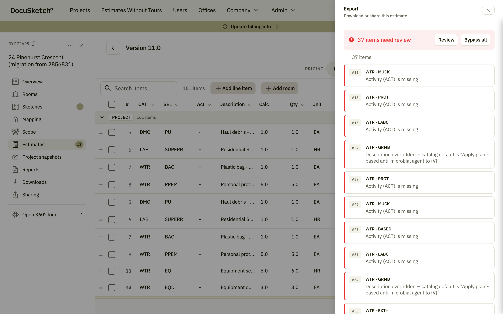
- File
- screenshots/12-export-panel.png
- Where
- Editor toolbar, Export
- Must show
- Report type options and the what-is-included list
12. In the mobile app
Outline — to expandOpened on a phone, the portal switches to a layout built for one: each line item is a card with its code, description, quantity and price, with search, the pricing tier and the AI actions stacked above, and Add and Export fixed to the bottom of the screen. Tapping a card opens that item's details.
The DocuSketch mobile app covers the same estimate separately — that part is still to be written.
To cover
- Reviewing and editing items on a small screen.
- Evidence and justification on mobile.
- What you still need a desktop for.
- The native app: how it differs from the portal on a phone.
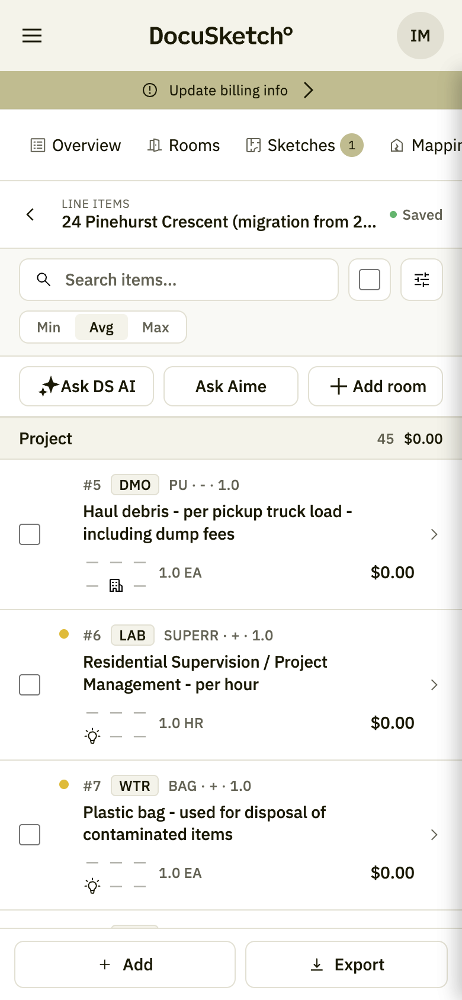
- File
- screenshots/13-mobile-list.png
- Where
- Portal at phone width, editor open
- Must show
- The card list, the filters above it, the Add / Export footer
13. FAQ and troubleshooting
Stub — collect from supportTo be filled from real support tickets. Candidates so far:
- Why is a room missing from my estimate?
- Why does a line item have a quantity I did not expect?
- Why can I not export yet?
- I generated with the wrong scope strategy — what now?
- Can I get back a line item I deleted?
- Why do prices differ from what my office normally uses?
14. Glossary
Stub| Term | Meaning |
|---|---|
| Line item | One priced row of the estimate — a code, a description, a quantity and a unit. |
| CAT / SEL / Act | Category, selector and activity — the estimating code that identifies the work. |
| Scope strategy | How broad the generated scope should be: Documented, Standard or Expanded. |
| Affected area | A room marked as touched by the loss. The scope follows what is marked. |
| Source | What produced a line item — DocuSketch or a person. |
| Justification | The stated reason a line item, or its quantity, is what it is. |
| Provenance | The trail from a line item back to the captured evidence behind it. |
| Version / revision | A generated estimate, and a saved round of edits inside it. |
Shot list
Working aid — not part of the articleCounting screenshots…
| # | File | Where to capture | Status |
|---|
For the team — remove before publishing
Open questions
- Naming clash, found while capturing: the Estimates tab calls the action Create Instant Estimate, the rows read Initial estimate v12, and the header buttons are Ask DS AI / Ask Aime. Which name does the article teach?
- How do we position Initial Estimate against an ordered estimate delivered by the DocuSketch estimating team? Readers will conflate them.
- Which parts are behind feature flags or plan tiers today — AI assistance, coverage audit, expanded export options? The article must not promise what an account cannot see.
- Export: which formats do we document for customers, and is there anything deliberately not exported that we should state (for example pricing in some outputs)?
- Found while capturing: Export opens straight into the blocking list when items still need review, with Bypass all right there. Do we teach bypassing at all, or only fixing?
- Is the audience split real — do adjusters need their own shorter article about evidence and justification only?
- Sections 4 to 11 are outlines. Which ones does the team want expanded first?
Screenshot conventions to agree
- One demo project used for all shots, so numbers stay consistent across the article. The current shots come from sandbox project “24 Pinehurst Crescent (migration from 2856831)”, which is not fit for publication: every price is $0.00, the line items are all unassigned (one Project group, no rooms), several rows repeat, and one note carries an internal ticket reference. We need a clean demo project before final capture.
- No real customer names, addresses or claim numbers in any capture.
- Browser at a fixed width, light theme, no personal avatar in the header.